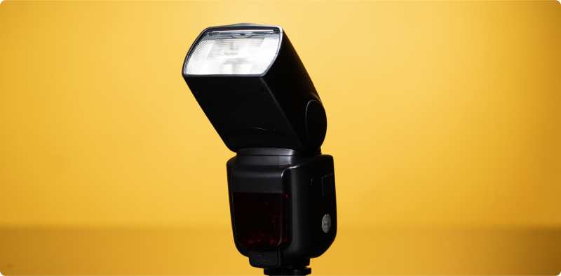

Photography Gear Essentials for Event Shoots:
What You Need to Know
Event photography, whether it's a wedding, corporate event, or concert, requires not only talent and creativity but also the right equipment. In this article, we'll explore the essential tools and equipment necessary for successful event photography, so you can be prepared for any challenge and capture stunning photos.
1. Camera: The Heart of Your Gear
At events, you need a reliable camera capable of handling various lighting conditions and situations. Professional photographers typically opt for DSLR or mirrorless cameras, which provide high image quality and versatility.
2. Lenses: Variety for Creativity
A good set of lenses will allow you to capture diverse shots at the event. It's recommended to have a wide-angle lens for group photos and scenes, as well as a zoom lens that allows you to capture moments from a distance.
3. Flash: Adding Light to Dark Places
A flash is an essential tool for event photography, especially in low-light indoor venues or evening events. Choose a flash with power and light direction adjustment options for the best results.
4. Spare Batteries and Memory Cards: Ready for Extended Shooting
Events often involve capturing many photos, so it's important to have an ample supply of spare batteries and memory cards. Ensure you have enough storage space for your photos and backup power sources for your camera.
5. Tripod: Stability for Long Exposures
A tripod can be a useful tool for event photography, especially in low-light situations or for creating long exposures. Opt for a lightweight and portable tripod that's easy to carry and set up on location.
6. Gear Bag: Protection and Organization

Don't forget a gear bag to transport all your equipment. Choose a bag with compartments and internal pockets for organizing and protecting your gear.
7. Additional Accessories: Prepared for Any Scenario
Other useful accessories include spare filters, lens cleaning materials, remote controls, and even additional lighting systems. Select accessories based on your shooting style and event requirements.
In conclusion, the right equipment plays a crucial role in successful event photography. Keep in mind the essential tools and accessories needed for your shooting style, and make sure you're prepared for any scenario. Preparation and practice will help you achieve excellent results and capture stunning photos at any event.